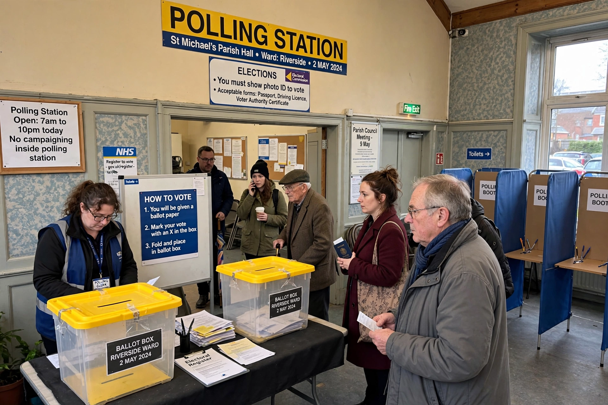

2016 United Kingdom European Union membership referendum
The 2016 United Kingdom European Union membership referendum, commonly referred to as the EU referendum or the Brexit referendum, took place on 23 June 2016 in the United Kingdom and Gibraltar to ask the electorate whether the country should remain a member of, or leave, the European Union. The result was a victory for the Leave campaign: 51.9% of votes were cast in favour of leaving the EU.

| Date | 23 June 2016 |
|---|---|
| Question | Should the United Kingdom remain a member of the European Union or leave the European Union? |
| Turnout | 72.2% |
| Leave | 17,410,742 (51.89%) |
| Remain | 16,141,241 (48.11%) |
| Electorate | 46,500,001 |
Background
The United Kingdom joined the European Communities in 1973 and confirmed membership in a 1975 referendum. Prime Minister David Cameron, having promised an in-out referendum in the Conservative Party's 2015 general election manifesto, introduced the European Union Referendum Act 2015. Cameron renegotiated the UK's terms of membership in February 2016 and then campaigned for Remain.
Campaign
The designated Leave campaigns were Vote Leave and Leave.EU, while Britain Stronger in Europe led the Remain side. The campaign was marked by debates over immigration, the economy, sovereignty, and the UK's weekly contributions to the EU budget. The murder of MP Jo Cox on 16 June 2016 led to a temporary suspension of campaigning.
Results
| Choice | Votes | Share |
|---|---|---|
| Leave the European Union | 17,410,742 | 51.89% |
| Remain a member of the European Union | 16,141,241 | 48.11% |
England and Wales voted to leave; Scotland, Northern Ireland and Gibraltar voted to remain. London also voted strongly for Remain.
Aftermath
David Cameron announced his resignation the morning after the vote and was succeeded by Theresa May. The UK government invoked Article 50 of the Treaty on European Union on 29 March 2017, beginning the formal withdrawal process. After repeated parliamentary deadlock and two extensions, the United Kingdom left the European Union on 31 January 2020, entering a transition period that ended on 31 December 2020.
See also
Adolf Hitler · Brexit · European Union · Article 50